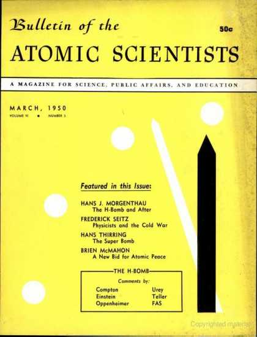

1:20:34 · 4 OPERE
Albert Einstein (Teil 2): Eine Formel Explodiert.
Il filo del discorso
Seconda parte di Albert Einstein, film televisivo di Georg Schiemann prodotto dal Fernsehen der DDR nel 1989–1990. Eine Formel explodiert segue il personaggio di Einstein negli Stati Uniti, dalla crisi europea del 1938 alla guerra fredda. Non è una conferenza: conversazioni, incontri e vicende personali appartengono alla rappresentazione drammatica. La storia di Jane, giornalista dapprima interessata alla notorietà dello scienziato, e di Frank, suo marito e collaboratore di Einstein nella finzione, accompagna il passaggio dalla curiosità giornalistica alla responsabilità verso le vittime della guerra. Il giornale vuole un’intervista che trasformi la minaccia europea in una notizia americana. Jane incontra un ambiente domestico animato dalla sorella Maja, dalla segretaria e dagli altri familiari, ma pubblica particolari che Frank considera un’invasione della vita privata. All’isolazionismo e alla ricerca dello scoop il film oppone le preoccupazioni degli esuli: persecuzioni e guerra non sono questioni remote per chi ha lasciato parenti in Europa. L’arrivo del rifugiato Schnittke, costretto a cercare un impiego fuori dall’università, mostra inoltre quanto la celebrità di Einstein sia diversa dalla precarietà degli altri emigrati. La fissione dell’uranio introduce una svolta. Alcuni fisici temono che il regime nazista costruisca un’arma nuova e chiedono a Einstein di rivolgersi a Roosevelt. Il film rappresenta la preparazione della lettera del 1939 e l’intervento di Alexander Sachs presso il presidente. La decisione nasce dal pericolo attribuito alla Germania, ma apre un processo politico e militare che lo scienziato non governa. Dopo Pearl Harbor, mentre Jane e Frank tentano di costruire una famiglia, la mobilitazione bellica investe anche la ricerca. Frank parte per un lavoro segreto; Einstein resta esterno al progetto. La relazione fra massa ed energia non viene qui assunta come un progetto tecnico della bomba: il racconto mette in tensione una scoperta teorica e le decisioni successive di molti altri soggetti. Le notizie della guerra separano i personaggi e rendono concreta l’incertezza degli esuli. Le discussioni domestiche sulla religione, sull’ordine della natura e sulla libertà umana sono dialoghi interpretati, non registrazioni di colloqui autentici. La paura di Maja conserva nella casa americana l’esperienza delle persecuzioni europee. Quando emerge che la Germania non dispone dell’arma temuta, il motivo iniziale della corsa atomica appare a Einstein esaurito. Nel film egli favorisce un nuovo contatto di Szilard con Roosevelt; la morte del presidente interrompe questa possibilità. La segretezza e le ragioni militari impediscono ai singoli scienziati di decidere da soli l’impiego della ricerca. Hiroshima porta il conflitto al centro della vicenda privata. Il destino di Frank e il dolore di Jane sono costruzioni narrative attraverso le quali il film interroga le conseguenze umane dell’arma. Jane accusa Einstein; il successivo colloquio distingue la formula del 1905, le ricerche nucleari e l’iniziativa politica del 1939, senza per questo dissolvere il problema della responsabilità. Il rimorso espresso dal personaggio riguarda soprattutto l’avere agito sulla base del timore di una bomba tedesca. Il ricordo dei bambini giapponesi incontrati prima della guerra entra in contrasto con ciò che Jane ha visto dopo l’esplosione. La lettura di Don Chisciotte alla sorella malata introduce poi una pausa affettiva nel racconto pubblico della scienza. Il dopoguerra non produce la pace sperata. Nei confronti con Edward Teller, Einstein sostiene il disarmo e la cooperazione internazionale, mentre Teller difende la necessità di rispondere alla minaccia sovietica e contesta il ritiro degli scienziati dal lavoro militare. Sono posizioni messe in scena: le spiegazioni dei bombardamenti e le intenzioni attribuite ai governi restano argomenti dei personaggi, non conclusioni storiche dimostrate dal film. Il discorso sulla bomba all’idrogeno richiama anche testi autentici di Einstein; il passo sul pericolo radioattivo corrisponde ad Arms Can Bring No Security, pubblicato nel marzo 1950. La scena accosta però formulazioni di provenienza diversa e non va presentata come la lettura integrale di quell’articolo o come una previsione scientifica oggi verificata in ogni sua espressione. Sorveglianza politica, richieste di conformismo e pressioni sulla stampa restringono progressivamente lo spazio del dissenso. Il film costruisce incontri di agenti, telefonate ostili e una richiesta editoriale contro Einstein. Jane rifiuta di partecipare alla campagna e lascia il giornale. Anche la proposta di tornare nella Germania ricostruita pone una domanda sull’esilio e sull’appartenenza, mentre la ricerca di una teoria unitaria continua fra tentativi e fallimenti. Nell’ultima conversazione Jane pensa a lavorare a Hiroshima e a scrivere lontano dall’ambiente che l’ha delusa. Einstein la invita a non abbandonare ogni fiducia nella possibilità di agire. La conclusione conserva così, insieme alla fragilità fisica e al lutto, una fiducia difficile nella vita e nella responsabilità personale.
I libri nel discorso
Albert Einstein (film televisivo in due parti)
Copertina: DDR TV-Archiv · Große Geschichten 60 · 2 DVD ·18 maggio 2012
Copertina autentica dell’edizione DVD comprendente Der letzte Sommer ed Eine Formel explodiert. Illustra il film di Schiemann con Abolins; non la serie 1984 né un libro su Einstein. L’edizione DVD è successiva al film e non identificata come sorgente del caricamento YouTube.
riconoscimento_vocale_locale
Passaggio 1:53 ↗ · Fonti e libro ↗
Lettera a Franklin D. Roosevelt del 2 agosto 1939
Prima pagina della lettera: Lettera del 2 agosto 1939; prima pagina riprodotta nel dossier didattico della FDR Presidential Library, p. 123 del PDF.
Riproduzione autentica della prima pagina della lettera, con intestazione e apparato del dossier didattico FDR Library. Rasterizzazione integrale della sola pagina 123 a 1400 pixel massimi; non è una copertina né l’intero documento. La risposta di Roosevelt appartiene a un documento distinto e successivo. Nessuna edizione o copia visibile nel filmato è stata identificata.
riconoscimento_vocale_locale
Passaggio 11:43 ↗ · Fonti e libro ↗
Don Chisciotte della Mancia
Copertina: Newton Compton · Vintage · edizione di riferimento
riconoscimento_vocale_locale
Passaggio 55:30 ↗ · Fonti e libro ↗
Arms Can Bring No Security
Identificazione probabile
Copertina del fascicolo marzo 1950, non dell’articolo singolo: Bulletin of the Atomic Scientists, volume VI, numero 3, marzo 1950: copertina del fascicolo; articolo a p.71
Copertina autentica dell’intero fascicolo contenente l’articolo di Einstein, non copertina autonoma dell’articolo né di un libro. Titolo, mese, anno, volume VI, numero 3 e riquadro The H-Bomb con Einstein leggibili. Il testo citato è stato verificato separatamente nella ripubblicazione ufficiale del Bulletin.
riconoscimento_vocale_locale
Passaggio 59:05 ↗ · Fonti e libro ↗Minutaggi ricavati da testi automatici, da riascoltare. Le identificazioni probabili sono segnalate accanto ai libri.